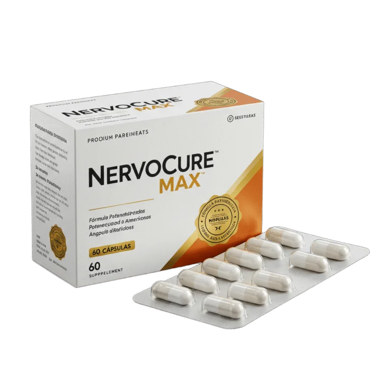

NervoCure Max • suplemento alimentar
NervoCure Max: conheça o produto e compare os kits
Veja a apresentação do produto, os preços publicados, as opções de kits e os relatos disponibilizados pelo produtor. A compra é concluída no ambiente da Braip.
Max

- Kits principais com 1, 3 ou 5 caixas
- Opções adicionais de 8 e 12 caixas
- Garantia informada de 90 dias
Preços e condições do checkout no momento da compra prevalecem.
Kits e preços
Compare as opções disponíveis
Os kits de 1, 3 e 5 caixas aparecem primeiro para facilitar a comparação. O kit de 5 caixas recebe destaque visual; isso não representa alegação de popularidade. As condições exibidas no checkout prevalecem.
Ofertas especiais
Experiências compartilhadas
Quatro depoimentos em vídeo
Os vídeos originais foram preservados. Eles só começam a carregar quando você interage com o reprodutor.
Minha experiência com o NervoCure Max
Relato individual disponibilizado pelo produtor.
O que percebi ao longo do uso
Relato individual disponibilizado pelo produtor.
Uma história sobre a rotina
Relato individual disponibilizado pelo produtor.
Minha experiência e agradecimento
Relato individual disponibilizado pelo produtor.
Depoimentos representam experiências individuais e não garantem resultados. Resultados podem variar.
Condição informada
90 dias de garantia
Os detalhes, a elegibilidade e o procedimento de solicitação seguem as condições vigentes apresentadas no momento da compra. Consulte os termos e guarde seus comprovantes.
Sobre o produto
Informação responsável para sua escolha
NervoCure Max é apresentado como suplemento alimentar. Esta página não atribui ao produto função de diagnosticar, tratar, curar ou prevenir doenças.
A composição, as quantidades e o modo de uso não são reproduzidos porque essas informações ainda dependem de validação do rótulo atual. Antes do uso, confira a embalagem recebida e siga as orientações do rótulo e de um profissional habilitado.
- Confira o rótulo da embalagem recebida.
- Respeite as instruções de uso do fabricante.
- Procure orientação profissional quando necessário.
Suplemento alimentar, não medicamento
NervoCure Max é um suplemento alimentar. Não é medicamento. As informações desta página não substituem orientação, diagnóstico ou tratamento realizado por profissional de saúde. Resultados podem variar de pessoa para pessoa.
Conheça de perto
Veja a embalagem em detalhes
Uma apresentação curta do NervoCure Max, mostrando a frente, as laterais e o verso da caixa.
Vídeo demonstrativo sem áudio, adaptado de material disponibilizado pelo produtor. Confira sempre as informações da embalagem recebida.
Ver kits e preçosCompra e envio
Como funciona a compra
- 1
Escolha o kit
Compare quantidade, brinde informado e valor total.
- 2
Acesse a Braip
O botão abre o ambiente externo de pagamento correspondente ao kit.
- 3
Conclua e acompanhe
Formas de pagamento, prazo e rastreamento são informados pelos responsáveis pelo pedido.
Perguntas frequentes
O que vale saber
O que é o NervoCure Max?
É apresentado como um suplemento alimentar. Não é medicamento e não substitui acompanhamento profissional.
Como escolher um kit?
Considere a quantidade desejada e o valor total. Esta página não recomenda duração de uso; siga o rótulo e orientação profissional.
Onde o pagamento acontece?
Ao escolher um kit, você segue para o ambiente externo da Braip, responsável pelo processamento da compra.
Quais formas de pagamento aparecem no checkout?
Na verificação registrada no projeto, o checkout exibiu cartão de crédito, boleto e Pix. As opções disponíveis no momento da compra prevalecem.
Qual é o prazo de entrega e como rastrear?
O prazo depende das condições apresentadas após a compra. O rastreamento é disponibilizado pelos responsáveis pelo processamento e envio do pedido.
Como funciona a garantia de 90 dias?
A solicitação deve seguir os termos vigentes apresentados no momento da compra. A Nuvessa não amplia nem altera essas condições.
Posso substituir consulta ou tratamento pelo suplemento?
Não. Suplementos não substituem orientação, diagnóstico ou tratamento realizado por profissional de saúde.
Pronto para comparar?